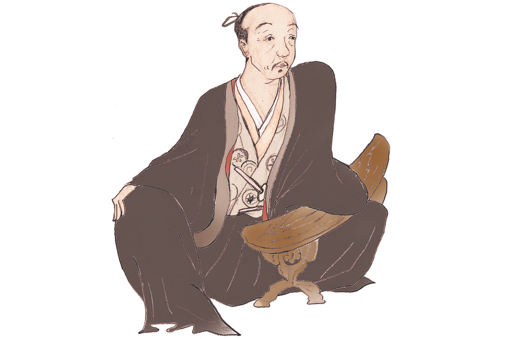
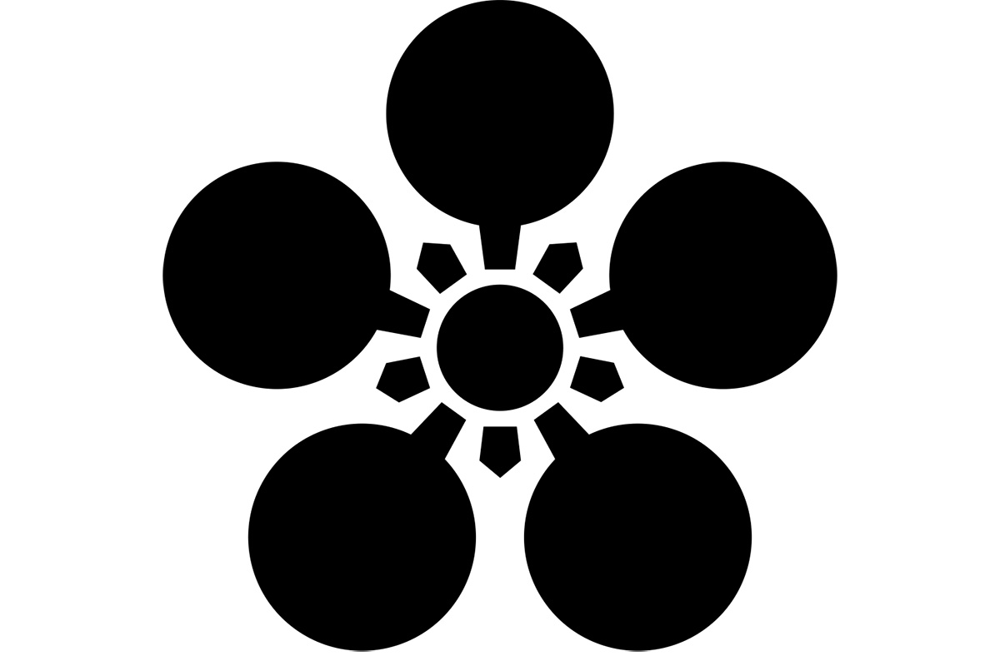
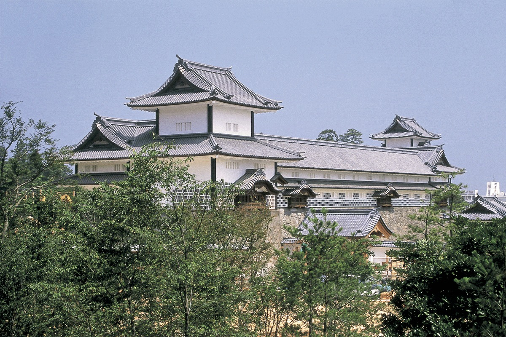

Префектура Исикава · Канадзава · история
Тосииэ Маэда: щеголь с копьём, который построил Кагу «в миллион коку»

Канадзава до сих пор живёт традициями, которые заложил дом Маэда. Начало им положил один человек: воин эпохи Сэнгоку Тосииэ Маэда, который за одну жизнь прошёл путь от пажа до правителя трёх провинций.
Эпоха
Век войн
С конца XV до конца XVI века Япония жила в непрерывной войне. Власть сёгунов Муромати окончательно рухнула, и вместо назначенных ими наместников по всей стране усилились местные военные правители, даймё. Этот период называют Сэнгоку, «эпохой воюющих провинций», и многие его полководцы стали в Японии легендой.
Один из них, Тосииэ Маэда, основал дом Маэда и княжество Кага «в миллион коку». Коку это мера риса, которой тогда измеряли доход земель, и миллион коку означал одно из самых богатых владений страны.
Биография
От пажа до одного из пяти старейшин
Тосииэ родился около 1538 года (по другой версии, в 1537-м) в провинции Овари, на западе нынешней префектуры Айти. Род Маэда возводил себя к древнему роду Сугавара. В детстве Тосииэ звали Инутиё, а взрослое имя он получил позже. Его главной женой стала Мацу (1547–1617), и кроме неё у Тосииэ было пять наложниц.
Совсем молодым он поступил на службу к Нобунаге Оде (1534–1582), полководцу, который начал объединять раздробленную Японию. Именно Тосииэ, по сути, в одиночку создал великий дом Маэда. Нобунага отдал ему провинцию Ното. После гибели Нобунаги Тосииэ служил его преемнику Хидэёси Тоётоми (1537–1598), который завершил объединение страны. Хидэёси пожаловал ему ещё две провинции, Кагу и Эттю, и владения Маэды раскинулись на три провинции. Позже Тосииэ вошёл в число пяти старейшин, высшего совета при правительстве Тоётоми.

Тосииэ был худощав, но ростом 182 сантиметра: для того времени редкость. Говорят, он был ещё и хорош собой. Он любил моду кабукимоно, вызывающе разодетых щёголей своей эпохи, носил даже женские кимоно и всегда одевался ярко. При этом в деньгах он разбирался прекрасно: по преданию, все доходы и расходы дома Маэда Тосииэ вёл сам. Он знал толк и в чайной церемонии, и в других искусствах. Эту любовь унаследовали следующие правители Каги, и благодаря ей Канадзава до сих пор остаётся городом, где живы традиционные ремёсла и искусства.
Паж и господин
Есть версия, что в юности Тосииэ и Нобунага были любовниками. Скорее всего, позднейшие рассказчики многое приукрасили. Но даже если до такой близости не доходило, связь между ними была очень крепкой, и в этом сомневаться не приходится.
Хроника
Жизнь Тосииэ по годам
- 1538. Родился в провинции Овари (по другой версии, в 1537 году).
- 1551. Поступил пажом к Нобунаге Оде.
- 1552. Первый бой. Тосииэ взял голову врага и после этого стал зваться Тосииэ.
- 1556. В битве при Ино стрела пробила ему правый глаз, но он продолжал сражаться и отличился.
- 1559. По некой причине потерял службу и стал ронином, воином без господина.
- 1560. Без разрешения Нобунаги пошёл в битву при Окэхадзаме и отличился, но вернуться на службу ему не позволили.
- 1561. Снова без разрешения вступил в бой. На этот раз заслугу признали, и Нобунага принял его обратно.
- 1575. Стал подчинённым Кацуиэ Сибаты (ум. 1583), одного из главных полководцев Нобунаги, и отправился с ним в край Хокурику на побережье Японского моря.
- 1581. Нобунага пожаловал ему провинцию Ното, и Тосииэ стал хозяином замка Нанао.
- 1583. В битве при Сидзугатакэ стоял в войске Сибаты, но отвёл своих людей и перешёл на сторону Хидэёси.
- 1598. Вошёл в число пяти старейшин правительства Тоётоми.
- 1599. Умер от болезни в Осаке.
Где увидеть
Места Тосииэ в Канадзаве
Замок Канадзава

Замок стоит в центре Канадзавы. До Тосииэ им владел Моримаса Сакума (1554–1583), вассал дома Ода. Хидэёси разгромил его и отдал замок Тосииэ, который вошёл сюда в 1583 году. С этого и началась Канадзава как столица дома Маэда.
Замок Канадзава
- Адрес
- префектура Исикава, Канадзава, Маруноути, 1-1
- Телефон
- +81 76-234-3800
Святилище Ояма
В Канадзаве стоит святилище Ояма, где почитают Тосииэ и его жену Мацу. Оно появилось в 1873 году. Через два года, в 1875 году, здесь построили ворота синмон, в которых смешаны японский, китайский и западный стили. Эти необычные ворота стали символом Канадзавы и охраняются государством как важная культурная ценность. Мацу почитают здесь вместе с мужем с 1998 года.
Святилище Ояма
- Адрес
- префектура Исикава, Канадзава, Ояма-мати, 11-1
- Телефон
- +81 76-231-7210
- Как добраться
- 5 минут на такси от станции Канадзава
Фото: Мария Араи (иллюстрация).